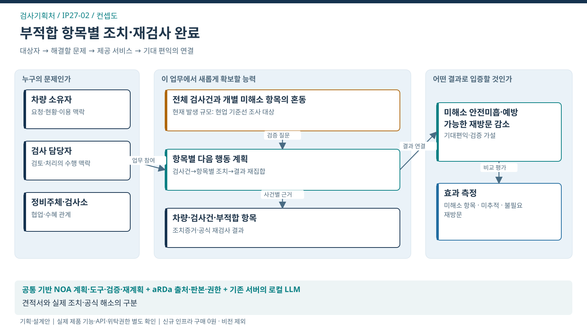
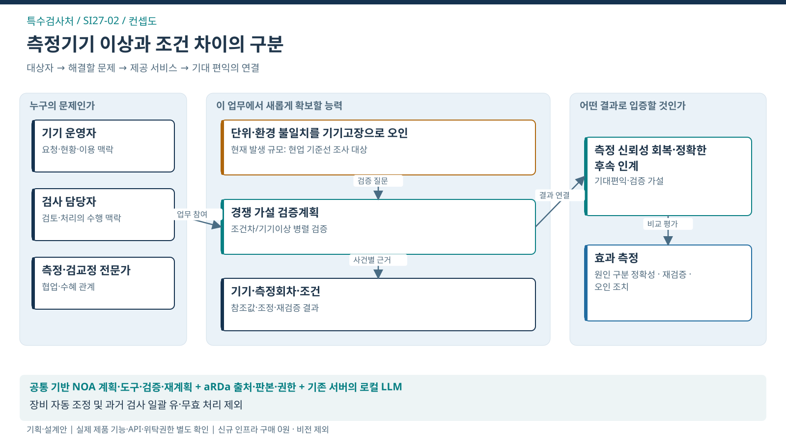
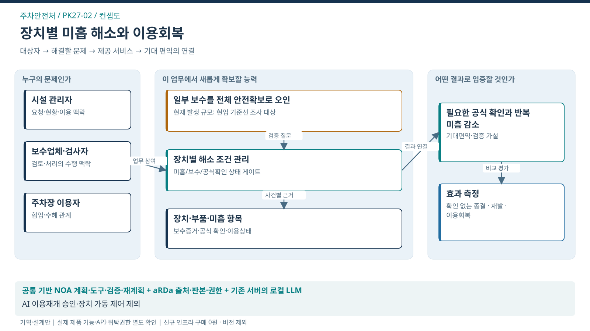
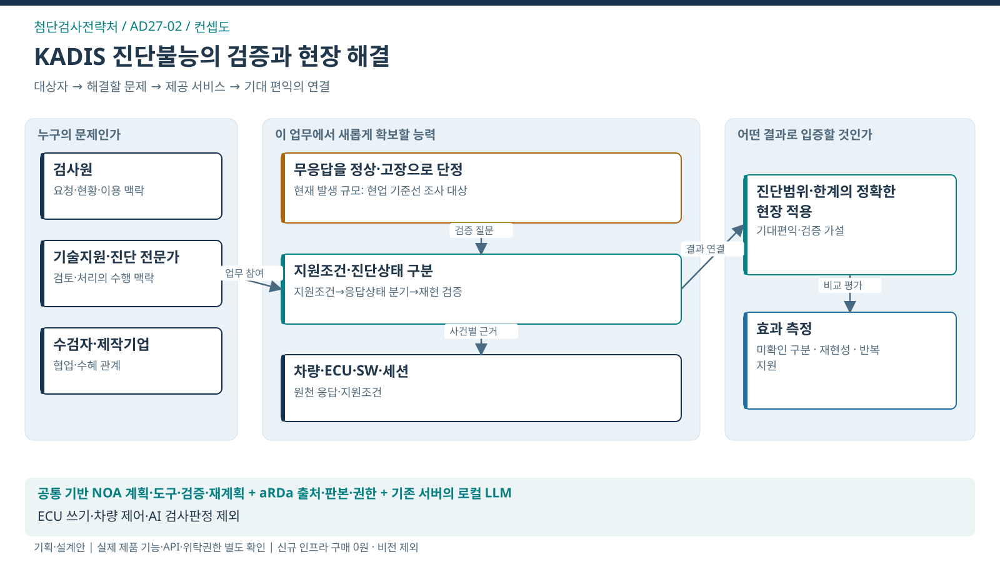
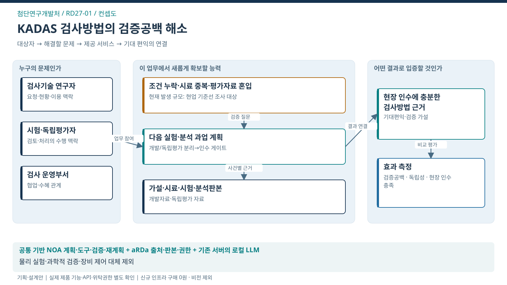

AX SERVICES
업무의 변화가
국민의 편익으로.
현재 상세기획 13개 처의 대표서비스. 문제와 목표를 확인하고 컨셉·흐름·구조로 탐색.

검사기획처
부적합 이후 실제 조치와 재검사 완료 지원
수검자·차량 소유자
서비스 살펴보기 ↗
특수검사처
측정기기 이상 검증과 판정 신뢰성 회복
검사업체·해당 검사를 이용하는 국민
서비스 살펴보기 ↗
주차안전처
기계식주차장 미흡 해소와 이용회복 검증
주차장 이용자·시설 관리주체
서비스 살펴보기 ↗
첨단검사전략처
복합 진단불능의 검증과 현장 해결
수검자·민간검사소·제작기업
서비스 살펴보기 ↗
첨단연구개발처
KADAS 검증공백을 줄이는 연구과업 수행 지원
향후 검사 이용자·검사기술 운영부서
서비스 살펴보기 ↗전환 방향·기대편익은 제안 가설이며, 실현효과·제품 적용버전·권한·기준선은 현업 검증 대상. 전체 제안 근거·제품·효과 비교 ↗